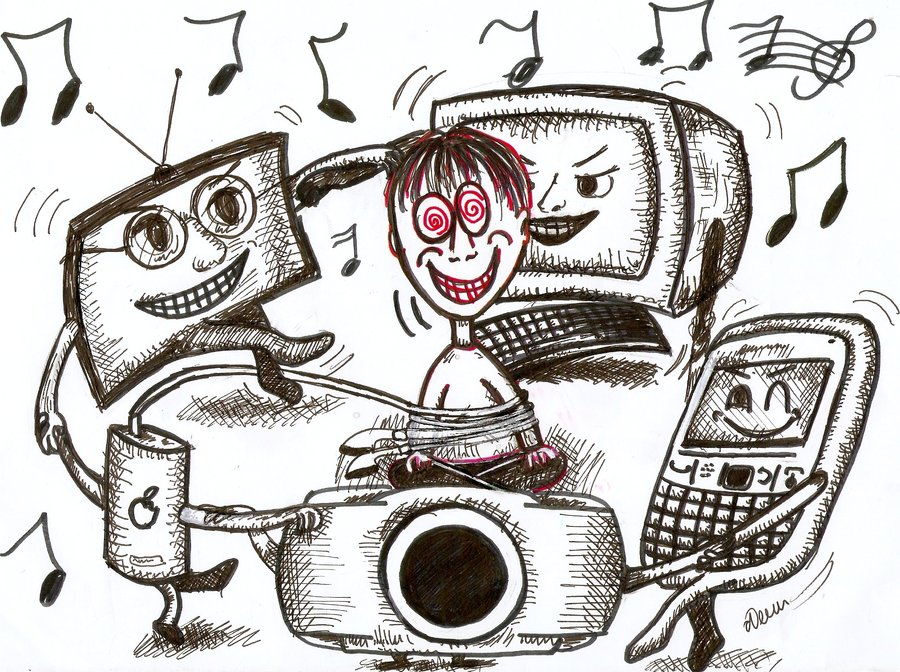

How Technology has changed human life
Technology is the flower of life, not the killer of productivity. Technology is every where, in the air, water, food, education, cars, bikes, shops, markets, kitchen, prison, banks and so on. It hard to imagine how life looks like without technology. Its almost a part of our eco system. There are different type of changes that occur due to adaptation on the eco system of technology. Somewhere it has positive impact and greater value. Somewhere the impact isn’t that good or positive
Technology changed education
The way we learn has be changed by technology. Before, we are not able to get data, information and knowledge that we are able to get flexibly now. Schools use to be far from home where as schools are now just a form of tablet or computer. There are vast different online courses that has content far more that there used to be in school library. This is a positive impact, a positive change.
Technology has changed the ways of how humans communicate
Today, we have mobile, internet, computer and social media content, video conferencing tools, and mobile applications to communicate with anyone from anywhere in the world. It was impossible in the past. The advantage of communication exchange is the fast, easy and fastest communication method. In the past, a letter took 10 days to reach its destination, for example money, greetings cards, personal letters and thousands of other sources of communication are not fast enough. But, the technology has changed so now you can send an email. You can transfer money from your mobile phone. This is technology and it is non-stop.
Changes in life styles
Technology has a positive and negative impact on our daily lives. Today, we live more of the appearance of a fulfilled life. The madness and misconduct of selfies in the risky areas are well known. We do online shopping and there are different varieties and price comparison tools. Technologies have an internet of things that anyone can use in daily lives. We are more busy than productive. 30 years ago people have time for friends and family. They lived and enjoyed life in real time. At the same time humans are emotional, caring and humane. Today we do the same thing on social media but without emotion. This is a technological effect. And we are responsible for this change. It is good or bad; it depends on the users and how they use it.
It has changed our Health Standards
Technology has increased the pace of our lives, but quality is lower. Technology has had a positive and negative impact on our lives. Today, we have more health care technology in the past. But the reason behind the inventions of health technologies is the abuse of technology in everyday life. In the past, people had less electrical equipment to work at home and in the field, physical endurance is better than today’s freaky fitness. They lived longer without technology, but today after technology, the average human age is reduced. We are greedy and we want more, faster and less effort. That’s why God’s company sells air purifiers, mineral water more confidently than people inspire trees to grow and grow natural sources. Even after technological advances in medical science, physicians are not convinced that in some cases life after the diagnosis of life is safe for the patient.
Our mental faculties are almost dead
Today, most people do not invent, deal with the problem of people. They can sell everything and every person is targeted as a customer. They collect data, what you search, where you click, what you buy, how you respond to a copywriter’s text. This has an impact on our lives because they produce products based on our search results and technologies. Everyone is doing a search, everyone wants to read an easy explanation, people do not have time to think and do research. For what? When there are search engines that even give instant suggestions to search for it or these. We cannot think critically, so we come up with artificial intelligence for the next generation. The positive is that we can get knowledge, information and data using technology. But the negative is too much data, overload of information and the abuse of technological equipment, which makes us dependent on technological tools. We cannot analyze, easily understand without seeing visual examples.
Negative and positive impact of technology on productivity in the workplace
Now, it is clear that technology affects our work habits. We want productivity and it’s great for business. Technology has changed our everyday business. You can measure the quality of your products and services. You can speed up the production process. You can reduce marketing costs by using an online marketing automation application. You can sell products online and get money directly at the bank. You can explore the market, analyze your competitors, learn about technological equipment. Such technological changes in the enterprise will reduce production costs and increase profits. Use of communication technology enables video conferencing, chats, online meetings and so on. These performance examples, thanks to technology, enable you to work in the workplace, which not only reduces costs, time and work, but also improves product quality. So you can fight with your competitors based on quality, speed and price.
Technology affects young people
Youth is totally dependent on technology for almost everything. Little knowledge or practical knowledge is not generated by classroom teachers, but by the internet. Technology makes children older. They learn and watch things that could not be viewed 25 years ago. In this way, technology negatively affects our youth. Our youth is ready to fight on social media but cannot run the road and cannot even take buckets of water at home. But on the internet it’s no less than an army. Is it positive or negative? Patriotism of youth is well known on the internet, and at the same time some of them do not want to save water, clean atmosphere and safety of the girl. There are so many positive technologies. And it is technology, which has increased the career opportunities for youth. Each type of skill can start an online business. They can become programmers, designers and service providers remotely. Technology has a positive and negative impact, but it is really important for our teachers, teaching in colleges and IT schools to teach their productive and environmentally-friendly technology applications.